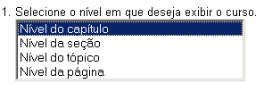
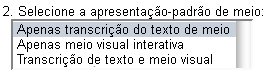
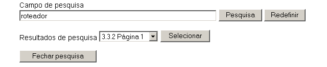
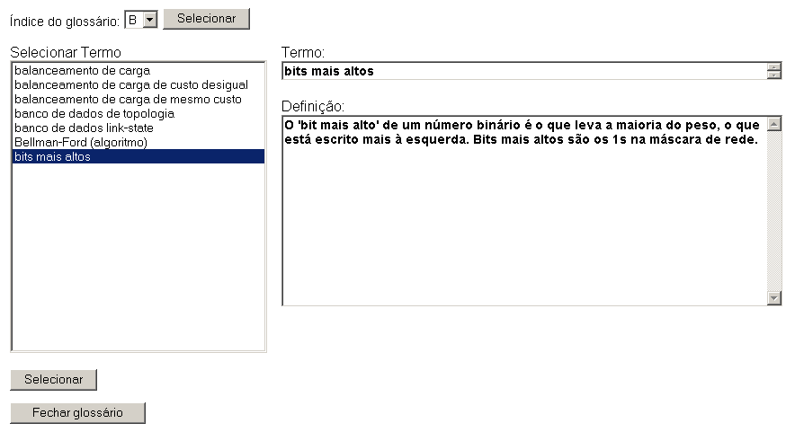
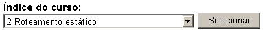
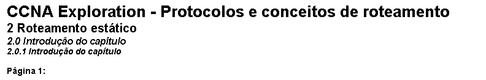
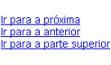

Manual do usuário do tema
Conteúdo
- Nível do curso
- Apresentação em meio
- Layout da página
- Navegação em teclado
Fechar janela
Ir para a parte superior
1. Nível do curso
O atributo de nível do curso altera o nível em que o conteúdo do curso é exibido. As opções são: "capítulo", "seção", "tópico" ou "página". O nível padrão é "capítulo".
- Nível do capítulo – exibe todas as seções, tópicos e páginas do capítulo atual.
- Nível da seção – exibe todos os tópicos e páginas da seção atual.
- Nível do tópico – exibe todas as páginas do tópico atual.
- Nível da página – exibe apenas a página atual.

Fechar janela
Ir para a parte superior
2. Apresentação em meio
O atributo de apresentação em mídia altera o formato no qual o meio é exibido em cada página. As opções são: "todas as opções", "transcrição resumida", "transcrição completa" ou "mídia interativa visual". A apresentação padrão é "todas as opções".
- Apenas transcrição do texto de meio – uma descrição por escrito de cada item de meio é apresentada sempre que um item de meio é encontrado no curso. Essa opção é totalmente acessível pelo teclado.
- Apenas meio visual interativa – o item de meio é apresentado em seu formato nativo, que contém uma representação visual de um conteúdo e normalmente a interatividade, inclusive vídeo, arrastar-e-soltar, animações e atividades. Itens apresentados nesse formato não são totalmente acessíveis e exigem o uso do mouse.
- Transcrição de texto e meio visual – nenhum meio é exibido por padrão. Sempre que um item de meio é encontrado no curso, o usuário pode selecionar com que método de apresentação exibir o meio. Essa seleção é feita para todos os itens de meio, e todos os itens de meio podem ser exibidos em qualquer formato.

Fechar janela
Ir para a parte superior
3. Layout da página
Cada página é formatada da mesma forma, mas o conteúdo se baseia no nível do curso selecionado antes da inicialização.
Os primeiros itens encontrados são os links de ferramentas do curso. Eles serão abertos em uma área na parte superior da página com a ferramenta selecionada. As duas ferramentas disponíveis são "Pesquisa" e "Glossário". O término da área de ferramentas é marcado com uma linha horizontal.
- Pesquisar – é aberto em nova janela. Contém um campo de entrada no qual qualquer cadeia de caracteres de pesquisa pode ser inserida. Durante o envio da pesquisa, uma lista de páginas é gerada onde a cadeia de caracteres de pesquisa foi encontrada no texto do corpo dessa página. As páginas são listadas na ordem em que aparecem no curso.

- Glossário – é aberto em nova janela. Contém e indexa uma lista dos termos de glossário que podem ser selecionados para exibir sua definição. Essa ferramenta também é inicializada quando um termo do glossário com link é selecionado dentro do texto do corpo de uma página.

O próximo item é o índice do curso. Essa caixa de seleção contém a lista completa dos itens de um curso separados pela exibição do nível do curso selecionada. Ela pode ser usada como uma navegação rápida dentro do curso. Para usar o índice, selecione o item desejado na lista e, em seguida, use o botão "Selecionar" para navegar até o item. O término da área de índice do curso é marcado com uma linha horizontal.

O número de seções, tópicos e páginas exibidos depende da seleção do nível de curso feita na inicialização. O término do nível do conteúdo é marcado com uma linha horizontal.

O conteúdo do curso é exibido em seguida e no seguinte formato:
- Título e subtítulo do curso na tag <h1>
- Número do capítulo e título na tag <h2>
- Número da seção e título na tag <h3>
- Número do tópico e título em negrito e itálico
- Número da página em negrito
Os elementos finais em uma página são os elementos de navegação "próximo", "anterior" e "topo".

- Ir para a próxima – navega para o próximo capítulo, seção, tópico ou página, dependendo do nível de curso selecionado.
- Ir para a anterior – navega para o capítulo, seção, tópico ou página anterior, dependendo do nível de curso selecionado.
- Ir para a parte superior – retorna à parte superior da página atual.
Fechar janela
Ir para a parte superior
4. Navegação em teclado
Os seguintes comandos de teclado podem ser usados para acessar ferramentas e navegar no curso:
- Alternar ferramenta de pesquisa: Control+Shift+S – abre a ferramenta de pesquisa em uma nova janela.
- Alternar ferramenta de glossário: Control+Shift+G – abre a ferramenta de glossário em uma nova janela.
- Ir para o próximo: Control+Shift+Seta para direita – navega para o próximo capítulo, seção, tópico ou página, dependendo do nível de curso selecionado.
- Ir para o anterior: Control+Shift+Seta para esquerda – navega para o capítulo, seção, tópico ou página anterior, dependendo do nível de curso selecionado.
- Focar próximo elemento: Control+Shift+Seta para baixo – coloca o próximo elemento da página em foco. Semelhante à tecla Tab.
- Focar elemento anterior: Control+Shift+Seta para cima – coloca o elemento anterior da página em foco. Semelhante à tecla Shift+Tab.
Nota: determinados plug-ins de navegador e outro software subjacente, como leitores de tela, podem substituir esses comandos de teclado.
Fechar janela
Ir para a parte superior